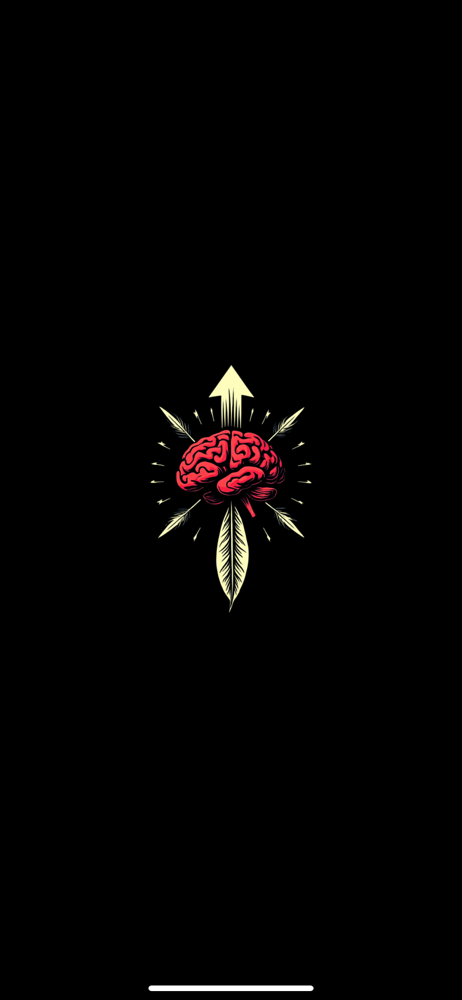
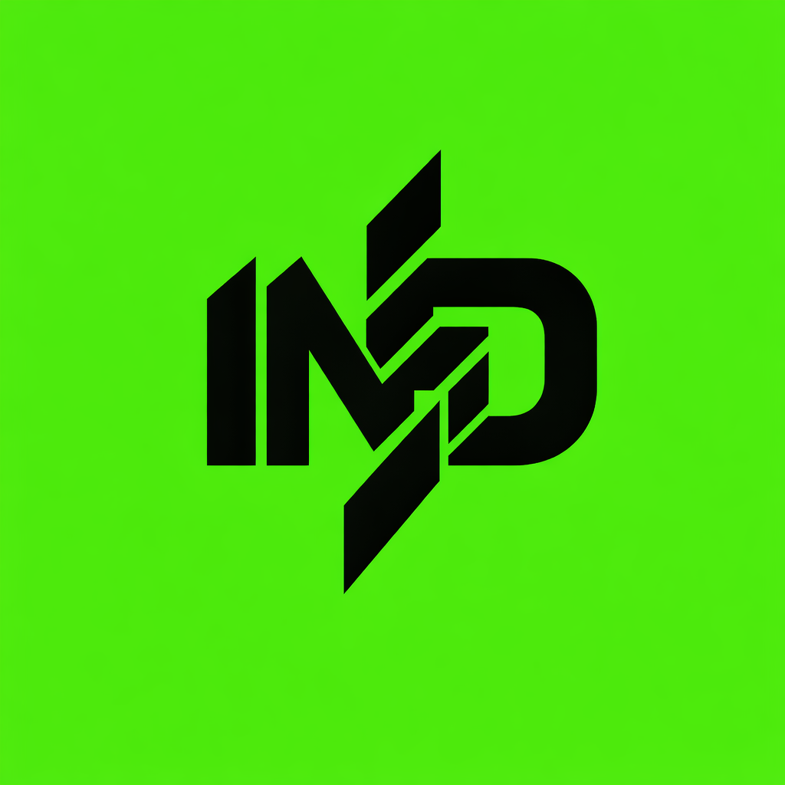
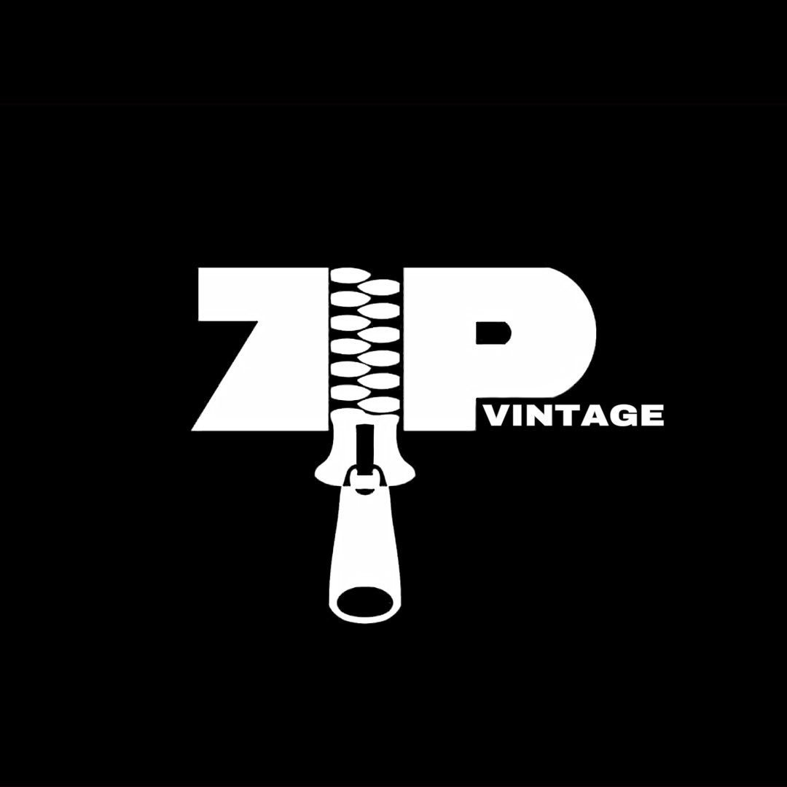

DUAA
Perfume Store • Social Media Video
Krijoj përmbajtje që tërheq vëmendjen, prej video editing deri te social media designs, content creation dhe komunikim vizual për brende e biznese.
Videot janë të vendosura në autoplay, muted dhe loop që me u lëshu nonstop pa pas nevojë me kliku.
Perfume Store • Social Media Video
Product Advertisement • Video Editing
Freelance Product Showcase
Product Reviews & Promotional Content
Football & Sports Social Media Content
Product Demonstration • Motion Graphics
Dizajne për social media, kampanja, udhëtime dhe koncepte vizuale.


Koncepte vizuale për fanella sportive.


Logo concepts të prezantuara thjeshtë dhe pastër.



Përvojë praktike në video editing, social media content dhe projekte kreative me kompani dhe klientë freelance.
Kam punuar me klientë të ndryshëm në projekte video, produkte, content për social media dhe kërkesa kreative të ndryshme.
Përvojë në ambient pune profesional, duke edituar përmbajtje për platforma si Instagram dhe TikTok.
Fokus në video editing për TikTok, Instagram dhe Snapchat, duke zhvilluar ritëm, kreativitet dhe stil social-first.
Trajnime dhe eksperiencë praktike që më kanë ndihmuar me zhvillu aftësitë në video editing dhe content creation.
Trajnim profesional në video editing, i fokusuar në workflow kreativ, teknika editimi dhe përmbajtje për media digjitale.
Shkollë e mesme profesionale me fokus në CNC Engineering dhe bazë teknike.
Kurs i gjuhës angleze që më ka ndihmuar në komunikim dhe punë me klientë ndërkombëtarë.

Jam Endrit Akinci, Video Editor & Creative Content Creator. Puna ime kryesore është video editing, por punoj edhe me content creation, social media content, social media design, logo concepts dhe ide vizuale për brende. Kam përvojë praktike me klientë freelance, produkte, sport content dhe dizajne për social media. Qëllimi im është me kriju përmbajtje që duket mirë, komunikon qartë dhe ndihmon biznesin me u prezantu ma profesionalisht online.
I hapur për bashkëpunime në video editing, content creation, social media content dhe projekte kreative.